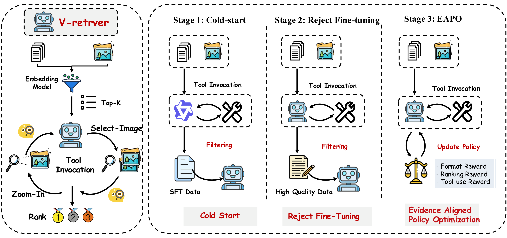

Dezhao Su
[中文版]Direct Ph.D. Student at Fudan University · Jointly Trained with TeleAI
Research Profile
I am a 2025-entry direct Ph.D. student at Fudan University, jointly trained with TeleAI, and a member of the Intelligent Complex Systems Laboratory. I am advised by Prof. Qunxi Zhu at Fudan University and Chenjia Bai at TeleAI. I received my bachelor's degree in Communication Engineering from Beijing University of Posts and Telecommunications.
My current research centers on embodied agents and self-evolution, particularly long-horizon task planning, autonomous learning, and continual improvement from interaction feedback. Previously, I worked on vision-language models, multimodal understanding, and visual segmentation.
Research interests
- Embodied Agents
- Self-Evolving Agents
- Vision-Language Models
Interested in an internship at TeleAI? Feel free to contact me!
Latest News
One paper accepted by EMNLP 2026
TeleMM-2.0-Thinking ranked second on the OpenCompass academic leaderboard (Silver)
↗The “Data Pioneer” intelligent data annotation platform received a National Silver Award at the Internet+ Innovation and Entrepreneurship Competition
The invention patent “Artificial Intelligence Drawing Method, Apparatus and System, and Storage Medium” was granted
Selected Works

V-Retrver: Evidence-Driven Agentic Reasoning for Universal Multimodal Retrieval
Empirical Methods in Natural Language Processing (EMNLP), 2026 · Accepted
We introduce an evidence-driven framework for universal multimodal retrieval, reformulating retrieval as agentic reasoning grounded in visual verification. The model actively gathers evidence with external visual tools and uses curriculum training to improve retrieval accuracy, reasoning reliability, and generalization.
Academic Experience
Education
Fudan University Electronic Information Ph.D.
Beijing University of Posts and Telecommunications Communication Engineering (Elite Program) B.Eng.
Research Experience
Embodied Intelligence Research Intern
China Telecom AI Research Institute
Research on embodied agents, self-evolution mechanisms, and planning and decision-making for robotic agents
Multimodal Foundation Model Research Intern
China Telecom AI Research Institute
Model training and fine-tuning, inference and evaluation, data construction, benchmarking, and applications in transportation scenarios
Intelligent Perception and Recognition Intern
China Telecom AI Research Institute
Machine-learning modeling and classification for imbalanced multidimensional data in telecom fraud detection
AI4Science Foundation Model Intern
Shanghai Artificial Intelligence Laboratory
Data processing and construction, model inference and evaluation, and RAG research and applications
Full-Stack Development & AI System Design
Sparkflare
Developed a data annotation platform and explored knowledge-driven annotation with AI agents; National Silver Award in the 2024 Internet+ competition
Academic Exchange & Collaboration
I welcome conversations about research collaboration, academic exchange, or any interesting ideas.